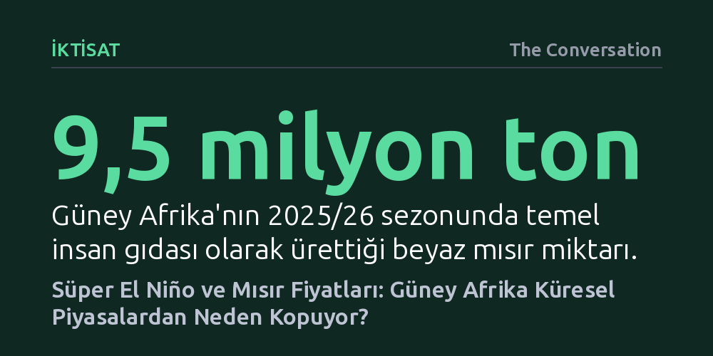

IKTISAT · The Conversation · 2026-10-07
Güney Afrika mısır fiyatları normalde Chicago borsasını izlese de, El Niño kuraklıkları yerel arzı vurunca bu bağ kopuyor ve fiyat dalgalanmaları şiddetleniyor. 2026 sonundaki süper El Niño öncesinde ülkenin elindeki yüksek devir stokları ise ani bir fiyat şokunu frenleyebilir.
Küresel emtia piyasalarına entegre ülkelerde bile aşırı hava olaylarının yerel arzı vurarak küresel fiyat çıpasını nasıl geçersiz kıldığını gösteriyor.

Normal piyasa koşullarında Güney Afrika'daki mısır fiyatları bağımsız hareket etmez; Johannesburg Borsası'ndaki vadeli işlemler, dünyanın en büyük tarım emtia merkezi olan Chicago Ticaret Borsası'ndaki (CME) fiyat hareketlerini yakından izler. Mısır küresel çapta alınıp satılan standart bir emtia olduğundan, Chicago'daki fiyat artışları veya düşüşleri döviz kuru ve yerel arz-talep dengesiyle filtrelenerek Güney Afrika pazarına doğrudan yansır.
Ancak Pasifik Okyanusu'ndaki yüzey suyu sıcaklıklarının aşırı yükselmesiyle tetiklenen El Niño olayları bu bağı kökünden sarsar. Güney Afrika'da yaz yağışlarını ciddi biçimde azaltan El Niño, bölge genelinde şiddetli kuraklık riskini tırmandırır. Bölgenin temel besin maddesi olan mısırda hasat çökünce, küresel piyasalar sakin kalsa dahi iç piyasada bambaşka bir fiyatlama dinamiği işlemeye başlar.
Tarım ekonomistlerinin 1997 ile 2024 yılları arasındaki günlük vadeli mısır fiyatlarını, döviz kurlarını ve iklim kayıtlarını incelediği ekonometrik modeller, çarpıcı bir ayrışmayı belgeliyor. Uzun vadede ABD ve Güney Afrika mısır fiyatları birlikte hareket etme eğiliminde olsa da, hava modelleri devreye girdiğinde fiyat oynaklığı yerel piyasada kalıcı ve çok daha sert hale geliyor.
Pasifik sularının soğuduğu ve Güney Afrika'da tarım için elverişli yağışlar getiren La Niña dönemlerinde, yerel fiyatlar ile ABD fiyatları arasındaki bağ büyük ölçüde korunuyor; yerel pazarda geçici bir sapma yaşansa bile stok durumuna bağlı olarak makas hızla kapanıyor. Buna karşılık incelenen üç büyük El Niño döneminde (1997-1998, 2014-2016 ve 2023-2024) Güney Afrika fiyatlarının ABD piyasasıyla bağı neredeyse tamamen koptu. Yerel rekolte çökünce alıcılar sınırlı ürün için yarışa girdi ve ABD'de mısır bol olsa bile Güney Afrika'da fiyatlar bağımsız bir biçimde fırladı.
2026'nın son aylarında zirve yapması ve en azından 2027 Şubat'ına kadar sürmesi beklenen yeni "süper" El Niño, bölge tarımı için bir kez daha kuraklık alarmı veriyor. Geçmişteki yıkımın boyutunu anlamak için 2015/16 sezonuna bakmak yeterli: O dönemde beyaz mısır üretimi yaklaşık 3,3 milyon tona gerilemişti; oysa 2025/26 sezonunda üretilen miktar 9,5 milyon ton seviyesindeydi. Beyaz mısırın uluslararası piyasada sarı mısıra kıyasla çok daha dar bir ticaret hacmine sahip olması, ithalat zorunluluğu doğduğunda maliyetleri katbekat artırıyor.
Bununla birlikte, yaklaşan sezonun önceki krizlerin birebir kopyası olması beklenmiyor. Güney Afrika şu anda önceki El Niño dönemlerinin başlangıcına kıyasla üçte bir ile beşte bir oranında daha yüksek devir stokuna sahip. Tüketim projeksiyonları ve beklenen zayıf rekolte hesaba katıldığında dahi, ülkenin Nisan 2027 pazarlama sezonu sonuna kadar yeterli yerel mısıra sahip olacağı öngörülüyor. Bu devir tamponu, iç piyasa fiyatlarının doğrudan ithalat paritesine fırlamasını şimdilik engelliyor.
El Niño'nun piyasa üzerindeki etkisi sadece fiili hasat düşüşüyle sınırlı kalmıyor; tüccarlar kuraklık beklentisini haftalar öncesinden fiyatlayarak spekülatif baskıyı erkenden artırabiliyor. Bu nedenle politika yapıcıların iklim tahminlerini ve rekolte beklentilerini üreticilere ve gıda işleyicilerine gecikmeksizin aktaran erken uyarı sistemlerini güçlendirmesi kritik bir zorunluluk haline geliyor. Bilginin piyasaya zamanında akması, hasat kötüleştiğinde fiyatların panikle sıçramasını önleyip kademeli uyum sağlamasına olanak tanır.
Üreticiler ve tarım işletmeleri açısından ise asıl sınav risk yönetimi cephesinde verilecek. Yeterli tahıl stoku bulundurmanın yanı sıra vadeli işlem gibi finansal korunma enstrümanlarını etkin kullanmak ve kuraklığa dayanıklı tarım pratiklerine yatırım yapmak hayati önem taşıyor. İklim krizinin getirdiği sert dalgalanmalar sıklaştıkça, hava riskini finansal ve lojistik araçlarla yönetmek, bizzat üretimin kendisini yönetmek kadar belirleyici bir hal alıyor.